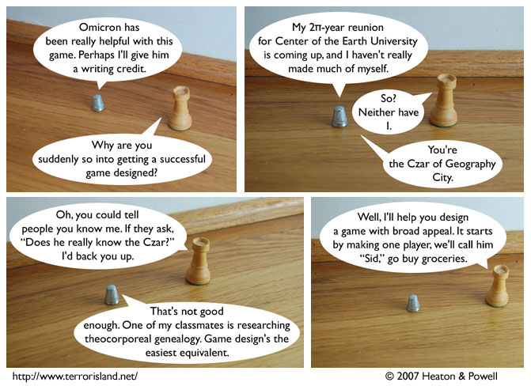

Strip #112
— Wednesday, February 28, 2007
Stephen is implying that ‘York’s Daily Life’ was not successful.
Notes, Thoughts, &c.
Ben’s Notes
You forgot about Center of the Earth University, didn’t you? Or “York’s Daily Life”? Or Stephen being the Czar? Wow, this strip didn’t seem so continuity-heavy to me when we were writing it. I’m not even going to bother explaining the rest of it now.
Lewis’s Notes
I heard that people who link to Terror Island from their website or blog are favored by the gods. It might not be true, but why risk it?